Walking by the River Cam with OpenShift Knowledge
Yesterday, I decided to take a stroll by the River Cam, enjoying the serenity and reflecting on some recent learnings. With my iPhone 14 in hand and GPT installed, I had a unique opportunity to blend the calm of nature with a bit of tech wisdom. As I walked and talked, I revisited some key concepts about OpenShift, and here’s a snippet of our conversation.
A Quick Dive into OpenShift
While walking, I asked GPT about some essential OpenShift concepts. Here’s what we discussed:
Question: What is the primary tool used for managing OpenShift clusters? Answer: oc (OpenShift CLI)
The oc command-line interface is the primary tool for managing OpenShift clusters. It simplifies various tasks such as creating, updating, and deleting resources within the cluster. If you’re getting started with OpenShift, becoming familiar with oc is crucial.
Question: What is the name of the platform’s built-in CI/CD service? Answer: Jenkins
OpenShift integrates seamlessly with Jenkins, a popular CI/CD service. Jenkins automates the process of building, testing, and deploying applications, which is vital for maintaining a smooth and efficient development workflow.
Question: What command would you use to log in to an OpenShift cluster using the CLI? Answer: oc login
To access an OpenShift cluster, you use the oc login command. This command prompts you for your credentials and logs you into the cluster, giving you the necessary permissions to manage resources.
Question: What is the term used in OpenShift for a collection of related pods, services, and other resources? Answer: Project (Namespace)
In OpenShift, a Project (or Namespace) is a logical grouping of related resources such as pods, services, and routes. This organization helps in managing resources more efficiently, especially in environments with multiple teams and applications.
Reflecting on Learning
As I walked by the river, the integration of nature and technology brought a unique clarity. The gentle flow of the Cam mirrored the streamlined processes within OpenShift, where each component plays a crucial role in the bigger picture.
Technology, like nature, has its rhythms and patterns. Understanding tools like OpenShift not only enhances our technical skills but also provides a framework for thinking about organization, efficiency, and innovation in all aspects of life.
Final Thoughts
Walking and thinking can be incredibly productive, especially when you have a knowledgeable companion like GPT. Whether you’re learning about OpenShift or any other topic, taking time to reflect and absorb information in a relaxed setting can lead to deeper understanding and new insights.
So, next time you go for a walk, consider bringing along a topic to ponder. You might be surprised at the clarity and ideas that emerge amidst the tranquility of nature
Walking by the river cam and going on the talking mode with GPT
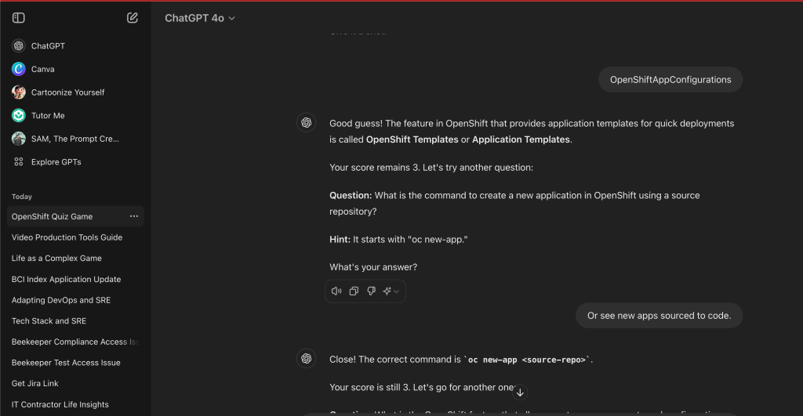
Question
Answer
Image
What is the primary tool used for managing OpenShift clusters?
oc (OpenShift CLI)
[
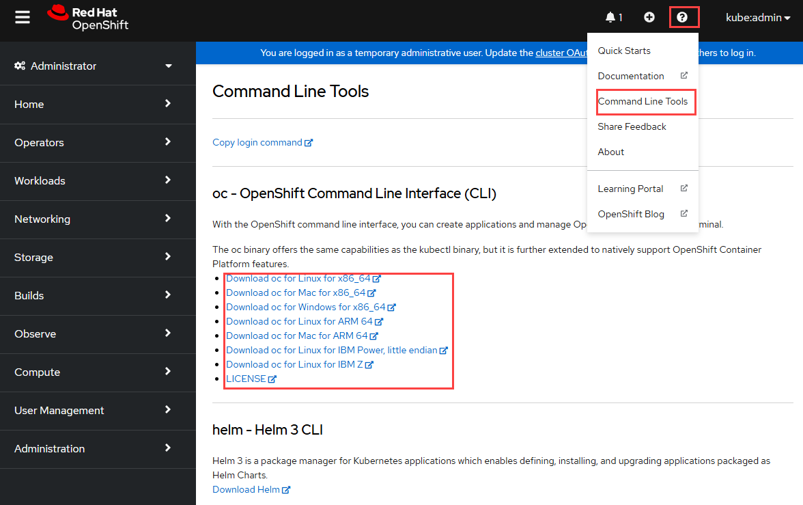
](https://learn.microsoft.com/uk-ua/azure/openshift/media/aro4-download-cli.png)
What is the name of the platform's built-in CI/CD service?
Jenkins
[](https://developers.redhat.com/sites/default/files/1_0.jpg)
What command would you use to log in to an OpenShift cluster using the CLI?
oc login
[
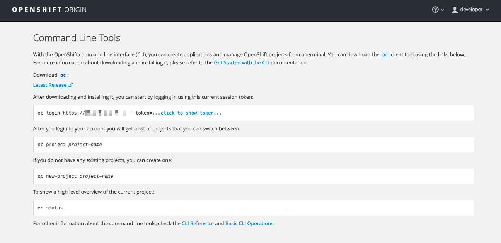
](https://access.redhat.com/webassets/avalon/d/OpenShift_Container_Platform-3.5-CLI_Reference-en-US/images/76acf4459f22d9040a4e3c1b346be2b5/cli_help.png)
What is the term used in OpenShift for a collection of related pods, services, and other resources?
Project (Namespace)
[
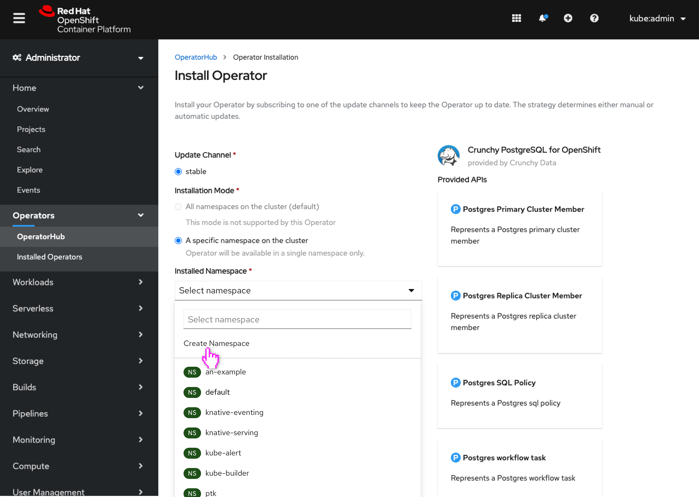
](https://openshift.github.io/openshift-origin-design/designs/administrator/olm/create-namespace-operator-install/img/1-2-select.png)
What feature allows you to easily deploy applications from source code repositories?
Source-to-Image (S2I)
[
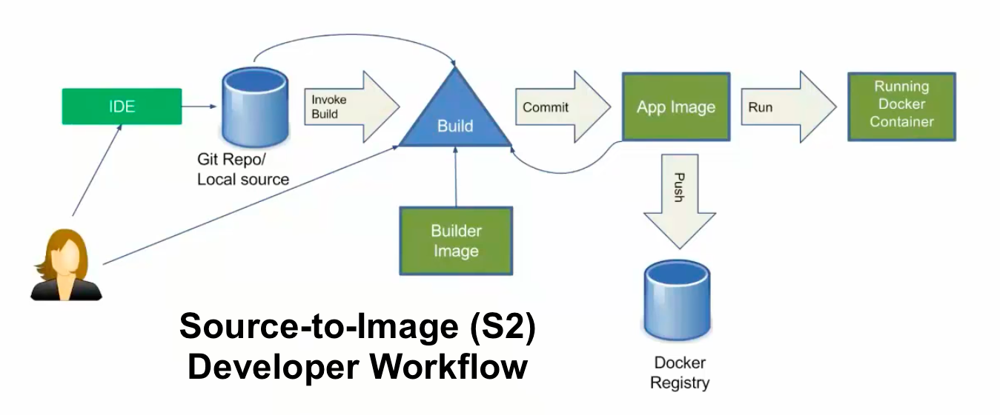
](https://www.redhat.com/rhdc/managed-files/ohc/S2IDeveloperWorkFlow1.png)
What is the default container runtime used by OpenShift 4.x?
CRI-O
[
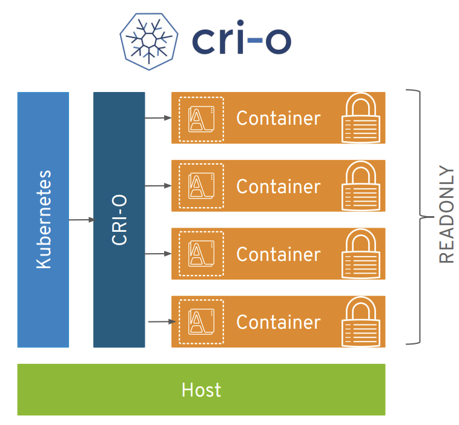
](https://developer.ibm.com/developer/default/tutorials/multi-architecture-cri-o-container-images-for-red-hat-openshift/images/k8s-crio.png)
Which component is responsible for managing networking within the cluster?
OpenShift SDN (Software Defined Networking)
[
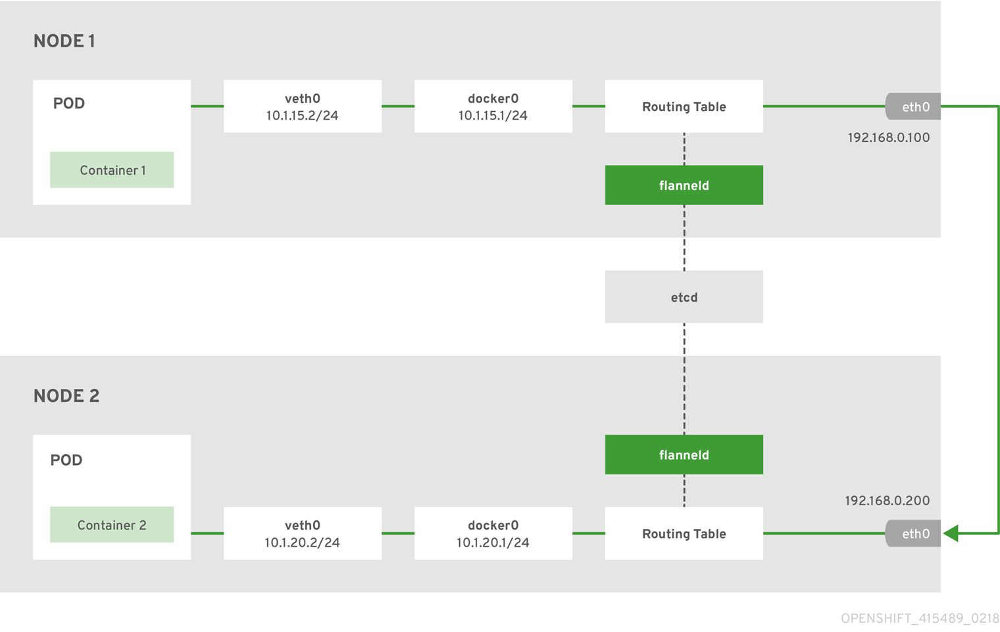
](https://access.redhat.com/webassets/avalon/d/OpenShift_Container_Platform-3.11-Architecture-en-US/images/0297bbeceb69783d8c36f4a99463731a/flannel.png)
What command would you use to create a new project in OpenShift using the CLI?
oc new-project
[](https://encrypted-tbn0.gstatic.com/images?q=tbn:ANd9GcRUq9hYIuSNDxBydaUWd7JzBo9Ru1FE9HYkRA&s)
What is the primary purpose of an OpenShift 'Route'?
Expose services to external traffic
[
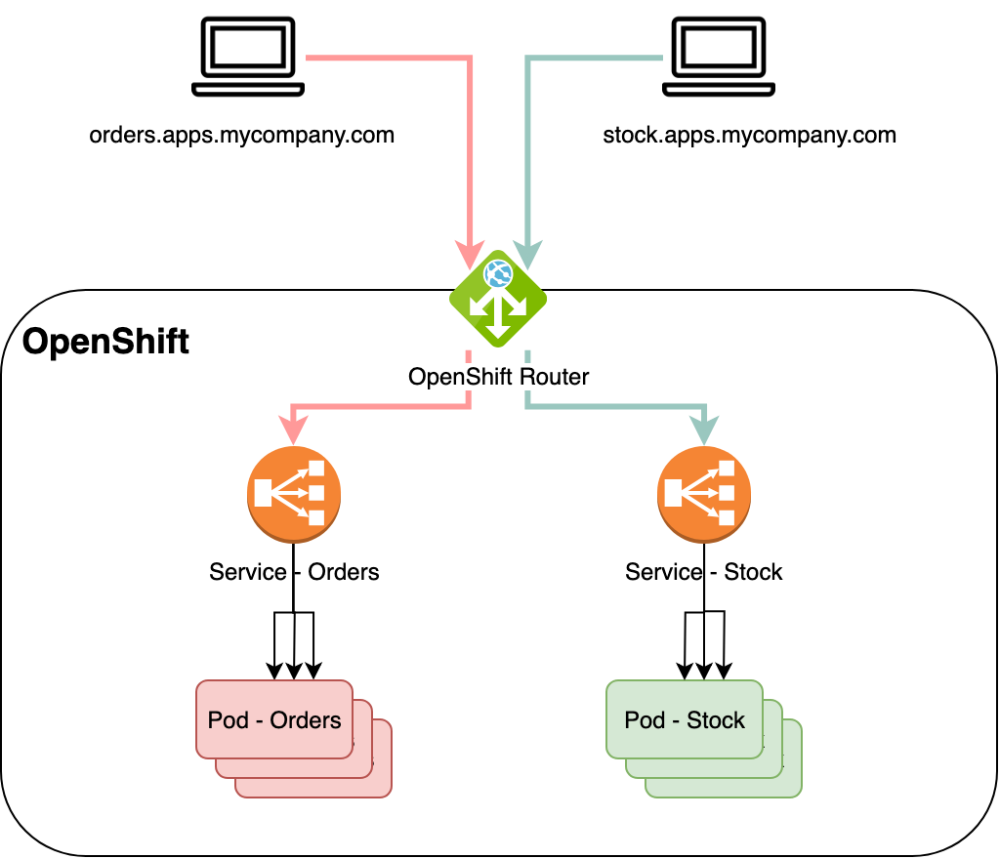
](https://rifaterdemsahin.com/wp-content/uploads/2024/07/2b603-1gjbrix91xgxtwkkoc6h0cg.png)
What command would you use to view the logs of a specific pod in OpenShift?
oc logs <pod-name>
[
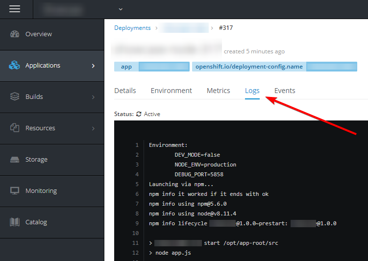
](https://i.sstatic.net/zlhbg.png)
What is the web-based console for managing OpenShift called?
OpenShift Web Console
[](https://developer.ibm.com/developer/default/blogs/openshift-101-web-console-and-cli/images/image3.png)
What command would you use to get a list of all pods in an OpenShift project?
oc get pods
[
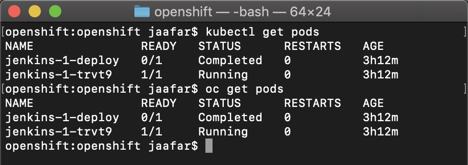
](https://www.redhat.com/rhdc/managed-files/ohc/get_pods-1.png)
What is the feature that automatically scales pods based on CPU or memory usage?
Horizontal Pod Autoscaler (HPA)
[
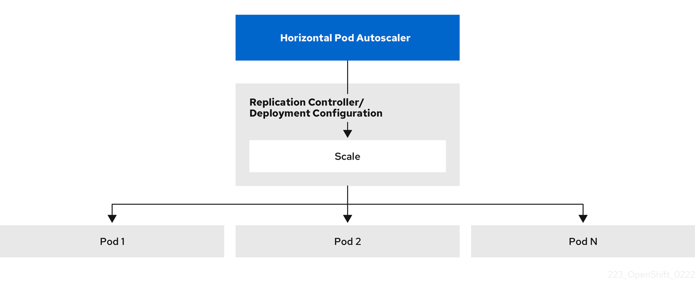
](https://access.redhat.com/webassets/avalon/d/OpenShift_Container_Platform-4.12-Nodes-en-US/images/e5f238cca06e9ee1647ad76efa36dcef/HPAflow.png)
What command would you use to delete a pod in OpenShift?
oc delete pod <pod-name>
[
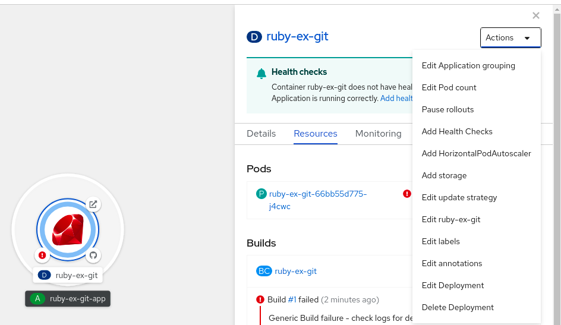
](https://access.redhat.com/webassets/avalon/d/OpenShift_Container_Platform-4.9-Nodes-en-US/images/0eaaed0e55e714f6e4f1094d5e62fa59/node-add-hpa-action.png)
What is the name of the object that defines how to build and deploy an application from source code?
BuildConfig
[](https://developers.redhat.com/sites/default/files/inline-images/Screen%20Shot%202021-06-11%20at%203.38.42%20PM.png)
What command would you use to scale a deployment to a specific number of replicas in OpenShift?
oc scale --replicas=<number> deployment/<deployment-name>
[](https://developers.redhat.com/sites/default/files/Figure%2021.%20Diagram%20of%20intra%20cluster%20networking.png)
What is the name of the service that handles authentication and authorization?
OpenShift Identity Provider
[
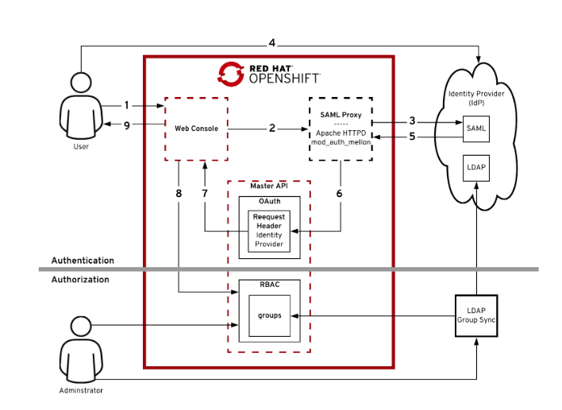
](https://www.redhat.com/rhdc/managed-files/2019/03/screen-shot-2019-03-12-at-12.50.14-pm.png)
What command would you use to describe a resource, like a pod, in OpenShift?
oc describe pod <pod-name>
[
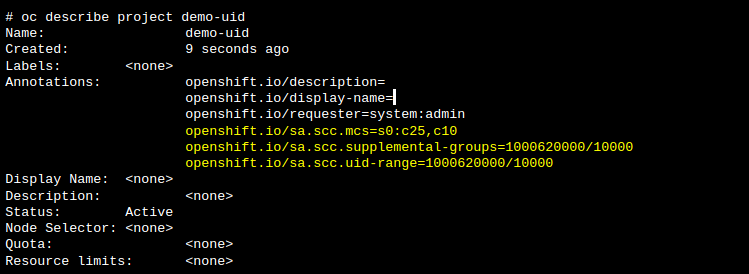
](https://www.redhat.com/rhdc/managed-files/ohc/uids1.png)
What is the feature that provides application templates for quick deployments?
OpenShift Templates (Application Templates)
[](https://www.redhat.com/rhdc/managed-files/styles/wysiwyg_full_width/private/ohc/process-4-1024x729.png?itok=40xNvlpd)
What command would you use to create a new application in OpenShift using a source repository?
oc new-app <source-repo>
[](https://opengraph.githubassets.com/6503eb4ce86c69f6b321d4944afc7eb4b27dae4c64616224b734ae71fb705de9/redhat-actions/oc-new-app)
What is the feature that provides persistent storage for applications?
ConfigMap and Secret
[
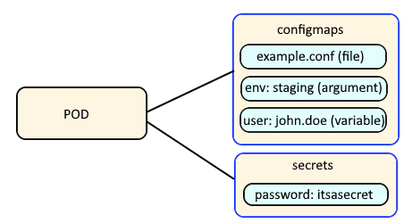
](https://www.freekb.net/images/openshift_configmap_secret2.png)
What command would you use to expose a service to create a route in OpenShift?
oc expose service <service-name>
[
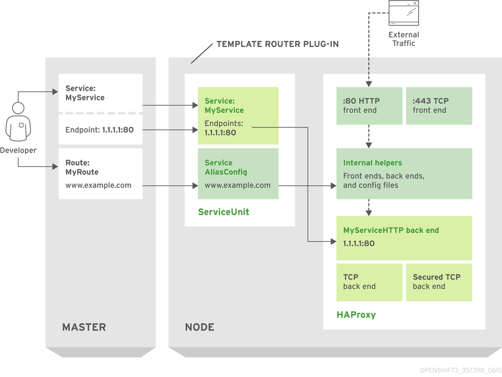
](https://access.redhat.com/webassets/avalon/d/OpenShift_Container_Platform-3.4-Architecture-en-US/images/4a4ff54ba2731f5148af229578659b6c/router_model.png)
What is the built-in logging and monitoring stack in OpenShift called?
EFK (Elasticsearch, Fluentd, Kibana) stack
[
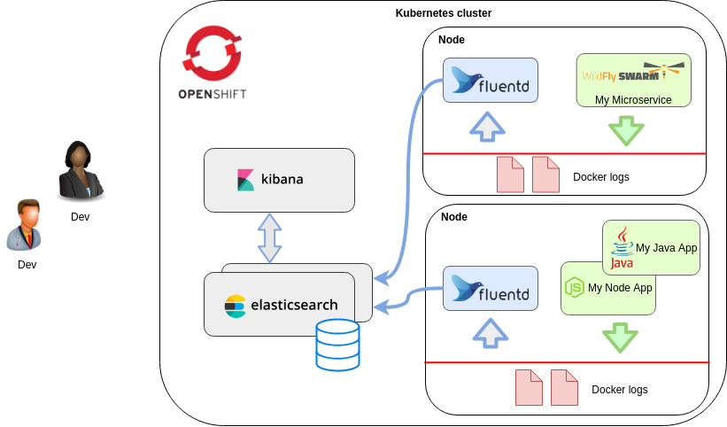
](https://rifaterdemsahin.com/wp-content/uploads/2024/07/1b49c-1_ld8q4olygoza2g1mfjypa.png)
Connect with me:
-
LinkedIn: https://www.linkedin.com/in/rifaterdemsahin/
-
Twitter: https://x.com/rifaterdemsahin
-
YouTube: https://www.youtube.com/@RifatErdemSahin
Imported from rifaterdemsahin.com · 2024